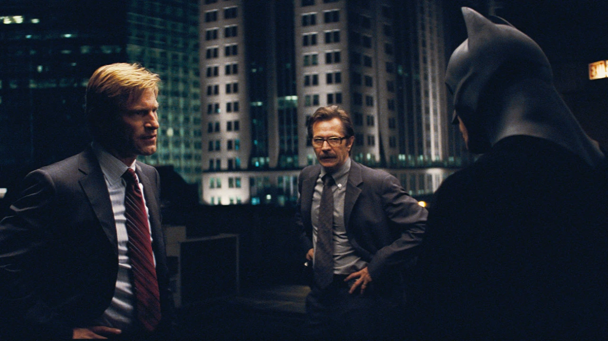
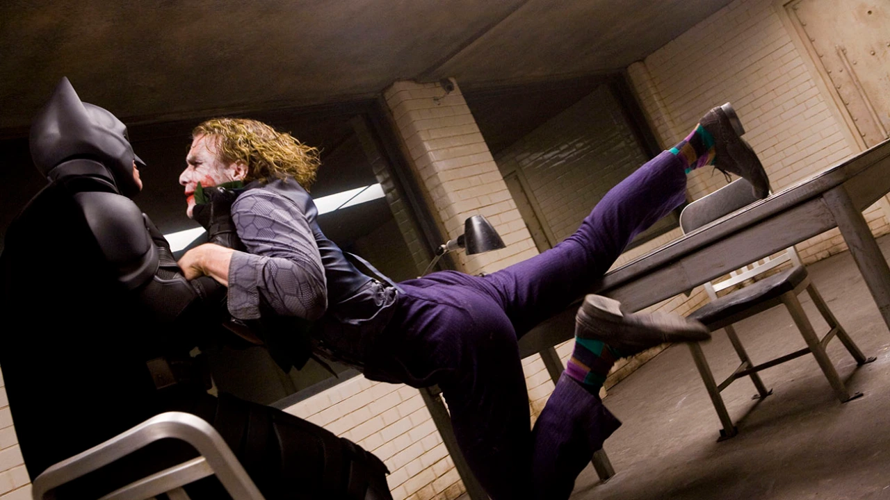
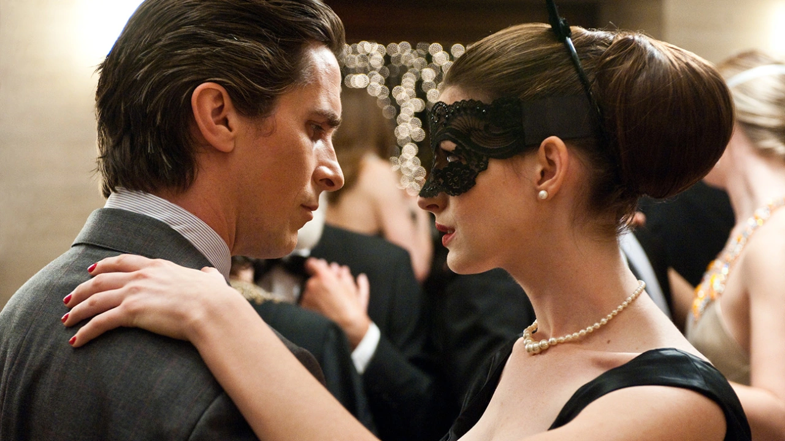

- 
-
“You either die a hero or live long enough to see yourself become the villain.”
– Batman, The Dark Knight
Batman talks to Lt. James Gordon about how he's now perceived as a villain following the death of Harvey Dent. He says, "You either die a hero or live long enough to see yourself become the villain. I can do those things. Because I'm not a hero, not like Dent. I killed those people. That's what I can be."
- img src="./assets/2.webp" alt="" class="moment-card-img">
-
“Sometimes the truth isn’t good enough, sometimes people deserve more.”
– Batman, The Dark Knight
Batman is forced to go into hiding when he's pinpointed as the blame for Joker's actions. The second installment of the Batman franchise closes with Batman saying, "Sometimes the truth isn't good enough, sometimes people deserve more. Sometimes people deserve to have their faith rewarded…"
- >
-
“Then you’re gonna love me.”
– Batman, The Dark Knight
Rachel kicks Joker in the groin as he approaches her, causing Joker to say, "A little fight in you. I like that." As Batman swoops in to save her, he tells Joker, "Then you're gonna love me."3
-
“Well, I grew up in Gotham, and I turned out all right.”
– Batman, The Dark Knight
Bruce says this in response to Natascha, who asks him how he could possibly want to raise children in Gotham. The quote is ironic, but perfect for his character.
- 
-
“Bruce Wayne, eccentric billionaire.”
– Bruce Wayne, The Dark Knight Rises.
Bruce cuts in to dance with Selina (Catwoman) as she’s dancing with an older gentleman. She asks him, "Yeah? Who are you pretending to be?" to which he responds, "Bruce Wayne, eccentric billionaire. Who's your date?"